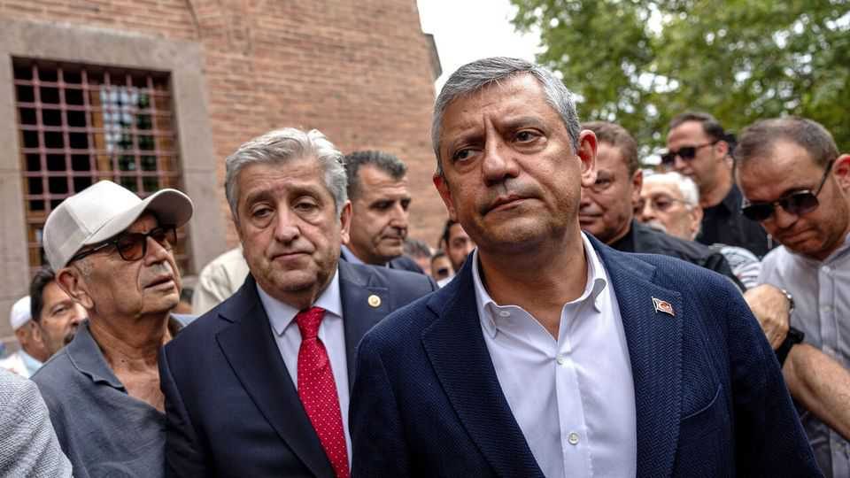
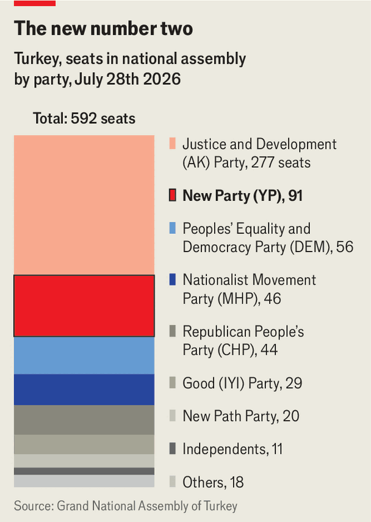

A new party breathes life into Turkey’s opposition
An end-run around a court ban gives Recep Tayyip Erdogan a strong challenger

Jul 30th 2026
TURKEY’s president, Recep Tayyip Erdogan, has repeatedly claimed that he and his ruling Justice and Development (AK) party deserve a new opposition. His wish came true on July 24th, when Ozgur Ozel, Turkey’s top opposition politician not behind bars, announced the launch of a new party named, apparently for lack of a better alternative, the New Party (YP).
At a stroke, Mr Ozel, recently removed as leader of the Republican People’s Party (CHP), has redrawn Turkey’s political map. Already, 91 of the CHP’s 135 parliamentarians have defected to the YP, making it the second-biggest in parliament (see chart). The CHP had been Turkey’s main opposition party since 2002, when voters swept AK to power. Opinion polls suggest Mr Ozel has taken with him most of the CHP’s voters, too. Some put the YP’s support at over 30%, ahead of Mr Erdogan’s party.

After leading the CHP for over two years, Mr Ozel was deposed by a court decree in late May. The court ruled that the party congress that elected him had been rigged and replaced him with Kemal Kilicdaroglu, who had been the party’s previous leader. When Mr Ozel’s supporters said they would not abide by the verdict, police stormed the CHP’s headquarters.
Critics saw Mr Erdogan’s fingerprints all over the ruling. Turkey’s strongman sees Mr Kilicdaroglu as an opponent he can tame. During his previous tenure as the CHP’s chairman, Mr Kilicdaroglu guided the party to a string of defeats at the polls, including his own loss to Mr Erdogan in the presidential elections of 2023. Only a year later, with Mr Ozel at the helm, the CHP had its best showing in half a century, edging out AK in local elections.
Turkey’s oldest party may be on its way to becoming a zombie. Polls suggest its support has sunk into the single digits since the split. A new low came on July 25th, when a journalist covering a CHP event presided over by Mr Kilicdaroglu discovered that hundreds of those in attendance were actually extras, recruited by casting agencies and paid 950 lira ($20) each to show up and cheer.
Assuming Turkey’s main court of appeal upholds Mr Kilicdaroglu’s reinstatement (a ruling is expected in the autumn), the YP may soon welcome yet more CHP defectors. Less clear is whether it can become more than a clone of the party from which it has broken away. The YP seems to have inherited most of the CHP’s secular and social-democratic base already. To take on Mr Erdogan, however, the party needs to build a wider coalition, encompassing parts of the centre-right as well as some nationalists and Kurds. It has not done so yet.
Mr Erdogan, prime minister between 2003-14 and president since, has already extended his time in office once, by changing the constitution. To give himself a shot at another term, he is expected to ask parliament to bring forward the coming presidential and parliamentary elections, officially scheduled for 2028, to next year. On paper, Mr Ozel and the YP can give him and AK a run for their money.
Yet in practice they face an array of obstacles, including growing repression and a judiciary beholden to Mr Erdogan. The courts have been clearing the field for the president (or for an anointed successor, should Mr Erdogan, who turns 73 next year, be unable to run). Ekrem Imamoglu, the popular then-mayor of Istanbul, was arrested in March 2025, days before being named the CHP’s presidential candidate. Opinion polls gave him a strong chance of beating Mr Erdogan. He faces up to 2,300 years in prison on corruption charges.
At least 26 other CHP mayors and hundreds of local officials and municipal workers have been arrested in the past couple of years. The net may also be closing around the opposition’s back-up candidate for the presidency, Mansur Yavas, the mayor of Ankara. As soon as the NATO summit held in the city in early July was over and foreign leaders headed home, police stepped up arrests of officials close to Mr Yavas.
The YP seems almost certain to become the target of new crackdowns. “Right now, the main question for the opposition is to survive, not to win elections,” says Berk Esen of Sabanci University in Istanbul. If they can endure for another six months to a year, Mr Ozel and his supporters may be able to put up a fight, he says. Mr Erdogan has pruned the opposition into what he thinks is manageable shape. It may surprise him by growing back stronger. ■